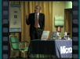

Key_Note_-_L’infrastruttura_per_le_aziende_People_Ready

Speaker(s):
Gestione_dell’installazione_e_aggiornamento_del_sistema_operativo_–_I_Parte
Speaker(s):
Gestione_dell’installazione_e_aggiornamento_del_sistema_operativo_–_II_Parte
Speaker(s):
TIR_-WSUS3-Overview
Speaker(s):